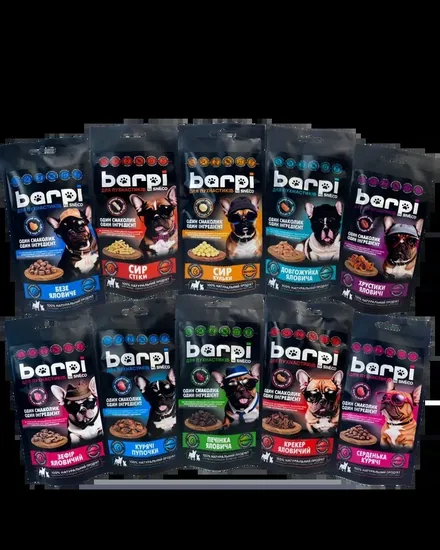

Натуральні мʼясні шматочки та снеки нового поколінняA new generation of natural meat inclusions and treats
Ваш курс у топ-30 світових виробників виграється в преміум-сегменті. Barpi дає для цього натуральну мʼясну сировину і власну технологію сушіння MVD SnEco, яку ми готові підтвердити на вашому продукті.Your course into the world’s top-30 makers is won in the premium segment. Barpi brings the natural meat ingredient and our own MVD SnEco drying technology, ready to be validated on your product.
Найшвидше зростання ринку кормів вимагає нової сировиниPet food’s fastest growth needs a new kind of ingredient
Ринок росте вартістю, а не обсягом. Топ-30 світу, куди прямує Kormotech, виграється саме тут: у преміумі та натуральних снеках.The market grows in value, not volume. The world’s top-30, where Kormotech is heading, is won right here: in premium and natural snacks.
У ваших рецептурах видно конкретну незакриту зонуYour recipes reveal one specific open gap
- База преміум-рецептур це дегідрований протеїн птиці 26–39%.The backbone of premium recipes is 26–39% dehydrated poultry protein. ДоведеноProven
- Дегідрованої яловичини немає навіть у «яловичих» SKU.No dehydrated beef even in the “beef” SKUs. ДоведеноProven
- Freeze-dried, топерів і coating немає у портфелі.No freeze-dried, toppers or coating in the portfolio. ДоведеноProven
- Напіввологі мʼясні палички виробляються в Європі (аутсорс).Semi-moist meat sticks are made in Europe (outsourced). ДоведеноProven
Ви вже застосовуєте ту саму логіку, що й ми: суха гідролізована куряча печінка у ваших рецептах, прямий аналог нашої сушеної печінки.You already use our exact logic: dry hydrolysed chicken liver in your recipes, a direct analog of our dried liver.
Пропонуємо підтвердити цю зону на discovery-дзвінку.We propose to confirm this gap on a discovery call. У валідаціїIn validation
Мʼясна сировина і OEM: два формати, один процесMeat ingredient and OEM: two formats, one process
1 · Мʼясна сировинаMeat ingredient
Сушені мономʼясні компоненти у ваші рецептури і на ваші лінії: шматочки й топери (рубець, печінка, легені, трахея, серця), гранулят і порошок під inclusion та coating, суха печінка як натуральний палатант.Dried mono-meat components for your recipes and lines: pieces and toppers (tripe, liver, lung, trachea, hearts), granulate and powder for inclusion and coating, dried liver as a natural palatant.
2 · OEM · готовий treatOEM · finished treat
Монопротеїнові снеки під вашу преміум-лінійку, вироблені і фасовані у нас. Оцінюється як готовий продукт, без інтеграції у ваше виробництво.Single-protein snacks for your premium line, produced and packed at our site. Judged as a finished product, with no integration into your production.
Обидва напрями стартують з однієї пілотної партії на нашій технології, тому їх можна перевіряти паралельно.Both directions start from the same pilot batch on our technology, so they can be tested in parallel.
Власна технологія, яка дає те, чого не дає звичайне сушінняA proprietary technology that delivers what conventional drying cannot
Аромат і палатабельністьAroma & palatability
Хрусткість і цілісність шматочкаCrunch and piece integrity
Собівартість і локальністьCost & local supply
Готові підтвердити це на вашому продукті і у сліпому порівнянні з вашою поточною сировиною, нашим коштом.We are ready to confirm this on your product, in a blind comparison against your current ingredient, at our cost. ДоведеноProven
MVD не претендує замінити всі технології. Там, де потрібна регідратація цілого шматка і чисте «raw», є freeze-dry, і це нормально. Ми закриваємо інший сценарій: аромат, хрусткість і серійну економіку.MVD does not claim to replace every technology. Where whole-piece rehydration and pure “raw” are required, freeze-dry has its place. We cover a different scenario: aroma, crunch and economics at scale.
Контрольований низькотемпературний процес, доведений наукоюA controlled low-temperature process, backed by science
Технологія, яка дозволяє виробляти натуральні мʼясні інгредієнти з максимальною харчовою цінністю.A technology that produces natural meat ingredients with maximum nutritional value.
Тривалість циклу сушіння. MVD, хвилини замість діб, у ~30 разів коротше за freeze-dry, при нутрієнтах на рівні FD і нижчій собівартості.Drying cycle time. MVD is minutes, not days, about 30× shorter than freeze-dry, with nutrients on par with FD and lower cost.
Джерела, наукова література (Springer 2023, MDPI, Frontiers), не наша сировина. Точні виходи по наших продуктах, на пілоті.Sources: scientific literature (Springer 2023, MDPI, Frontiers), not our raw material. Exact yields on our products come from the pilot. У валідаціїIn validation
Що дає низькотемпературна вакуумна сушкаWhat low-temperature vacuum drying delivers
| ПараметрParameter | ЗначенняValue | Що це даєWhat it delivers |
|---|---|---|
| Температура процесуProcess temperature | 34–38°C | Не спалюємо користьWe don’t burn the goodness |
| Видалення вологиMoisture removal | до 99%up to 99% | Хрусткий, стабільний продукт (aw < 0,60)Crunchy, stable product (aw < 0.60) |
| Збереження поживнихNutrient retention | до 95%up to 95% | Білки, амінокислоти, ферментиProtein, amino acids, enzymes |
| Строк зберіганняShelf life | до 12 місяцівup to 12 months | Без холодильника, 0–30°CNo cold chain, 0–30°C |
| ТекстураTexture | хрумка, легкаcrunchy, light | Легко дозувати, кришити, наноситиEasy to dose, crumble, coat |
| АроматAroma | природнийnatural | Природний палатант, без різкого запаху субпродуктівNatural palatant, no harsh offal odour |
Показники ефективності, які ми підтверджуємо на ваших зразках у пілоті, з COA на кожну партію.Performance figures we confirm on your samples in the pilot, with a COA per batch. У валідаціїIn validation
З чим працюємоWhat we run today
Фракція підбирається під ваш напрям: treat, топер, inclusion, палатант. На тій самій технології у групі працює лінійка snEco: фрукти, овочі, сир.The fraction is matched to your direction: treat, topper, inclusion, palatant. The same technology runs our snEco line: fruit, vegetables, cheese.
Типовий профіль сушеного мʼясаTypical profile of our dried meat
| ПараметрParameter | ЗначенняValue | Що це даєWhat it delivers |
|---|---|---|
| ВологістьMoisture | < 4% | Стабільність без консервантівStability without preservatives |
| БілокProtein | 50–75 г/100 гg/100 g | Концентрований протеїн, залежить від сировиниConcentrated protein, varies by raw material |
| ЖирFat | 5–25% | Носій аромату і енергії, залежить від сировиниCarrier of aroma and energy, varies by raw material |
| ЗолаAsh | до 5%up to 5% | Низький мінеральний баласт у рецептуріLow mineral ballast in the formula |
| Water activity | < 0,60 | Нижче порогу росту мікрофлори, 0–30°CBelow microbial growth threshold, 0–30°C |
| Salmonella | відсутняabsent | Підтверджено лабораторією, 25 гLab confirmed, 25 g |
| Важкі метали (Pb, Cd)Heavy metals (Pb, Cd) | протокол на партіюper-batch report | Проти лімітів Dir. 2002/32/EC, додаток A2Against Dir. 2002/32/EC limits, appendix A2 У валідаціїIn validation |
Точні значення залежать від виду сировини і фракції, тому фіксуються у специфікації на конкретне SKU і підтверджуються COA на кожну партію.Exact values depend on the species and the fraction, so they are fixed in the per-SKU specification and confirmed by a COA on every batch.
Прозоро: доведене, у валідації, запланованеTransparent: proven, in validation, planned
- Лабораторія Держпродспоживслужби: сальмонела не виявлена в 25 гState Lab: Salmonella not detected in 25 g
- ТУ і реєстрація потужності r-UA-21-17Product spec (TU) and facility reg. r-UA-21-17
- Типовий профіль: волога, білок, жир, зола, awTypical profile: moisture, protein, fat, ash, aw
- Потужність 3 т/міс і рітейл-трекшн Barpi у мережахCapacity of 3 t/month and Barpi retail traction in chains
- SIAL Innovation Award 2024 (Dairy)SIAL Innovation Award 2024 (Dairy)
- Сліпе порівняння з вашою поточною сировиноюBlind comparison vs your current ingredient
- Виходи по конкретній сировиніYields on specific raw material
- Важкі метали (Pb, Cd) на нашій сировиніHeavy metals (Pb, Cd) on our raw material
- EU-approval майданчика в СловаччиніEU approval of the Slovak site
- Розширення потужностейCapacity expansion
- Валідований pathogen-reduction маршрутValidated pathogen-reduction route
Ми не продаємо готовність, якої немає. Ми показуємо чесну карту і план її закрити.We do not sell readiness we lack. We show an honest map and a plan to close it.
Безпека це система контролю, а маршрут у ЄС існуєSafety is a control system, and the EU route exists
Система контролю небезпекHazard-control system
- HACCP + вхідний контроль сировини Cat 3HACCP + Cat 3 incoming control
- Environmental monitoring і hold-and-releaseEnvironmental monitoring & hold-and-release
- Тест партії, це верифікація, не єдиний контрольBatch testing is verification, not the only control
Регуляторний маршрутRegulatory route
- Сировина Cat 3 за Reg (EC) 1069/2009Cat 3 material under Reg (EC) 1069/2009 ДоведеноProven
- «Authorised drying treatment» за Reg 142/2011, за погодженням органу“Authorised drying treatment” under Reg 142/2011, by authority approval У валідаціїIn validation
- Майданчик у ЄС, рух до заводів ЄС без BCPEU site, intra-EU movement without BCP ЗапланованоPlanned
Це слайд довіри: чесна risk-map і план валідації, а не декларація «низька волога = безпечно».A trust slide: an honest risk map and validation plan, not “low moisture = safe”.
Реальна потужність сьогодні і поетапний план стійкостіReal capacity today and a staged resilience roadmap
ПотужністьCapacity
Поточна доступна потужність, зі швидким масштабуванням за потреби: обладнання модульне, лінія нарощується блоками під підтверджений обсяг.Current available capacity, with fast scale-up on demand: the equipment is modular and the line grows in blocks against a confirmed volume. ДоведеноProven
Стійкість поставокSupply resilience
Друге джерело зʼявляється після кваліфікації, це roadmap, а не готовий dual sourcing.A second source appears after qualification: a roadmap, not ready dual sourcing.
Рахуємо вартість у застосуванні, а не €/кгWe count cost-in-use, not €/kg
- Основа dry-matter і реальний inclusion %Dry-matter basis and real inclusion %
- Втрати і крихкість, вихід coatingLosses and breakage, coating yield
- Логістика і ефект на маржу готового продуктуLogistics and effect on finished-product margin
Полиця ЄС: корм із сушеним мʼясним компонентом, у 1,9–18 разів дорожчий за масовий кібл. Це цінове вікно для нашої сировини.EU shelf: food with a dried meat component runs 1.9–18× above mass kibble. That is the price window for our ingredient.
Точний ціновий коридор, on request, але завжди з логікою cost-in-use, а не голою цифрою.The exact price corridor is on request, always with cost-in-use logic, never a bare number.
До контракту, чіткий вимірюваний пілотBefore a contract, a clear measurable pilot
Acceptance criteria числами: aw, вологість, мікробіологія n=5, палатабельність, крихкість, перекисне число, cost-in-use. Owners і дати фіксуються.Acceptance criteria in numbers: aw, moisture, microbiology n=5, palatability, breakage, peroxide value, cost-in-use. Owners and dates are fixed.
90 днів, це target-орієнтир, не обіцянка.90 days is a target, not a promise. ЗапланованоPlanned
Один дзвінок, три рішенняOne call, three decisions
Barpi і наша унікальна технологія, логічний крок вашого шляху в топ-30: інгредієнт, який працює на преміум.Barpi and our unique technology are a logical step on your path to the top-30: an ingredient built for premium.
Пропонуємо 30-хвилинний discovery-дзвінок цього тижня. Зразки і пілот, нашим коштом; далі стартуємо side-by-side.We propose a 30-minute discovery call this week. Samples and pilot at our cost; then we start the side-by-side.
Технологічна група з реальним виробництвом і визнаннямA technology group with real production and recognition
- snEco + Barpi, виробництво в Мукачеві (UA)snEco + Barpi, production in Mukachevo (UA) ДоведеноProven
- Власна патентована технологія сушінняProprietary patented drying technology ДоведеноProven
- SIAL Innovation Award 2024, за снек на тій самій технології сушінняSIAL Innovation Award 2024, for a snack on this same drying technology ДоведеноProven
- Експорт у понад 7 країн, 15+ міжнародних виставокExport to 7+ countries, 15+ international trade shows ДоведеноProven

Деталі, сертифікати і специфікації, у технічному додатку далі.Details, certificates and specs are in the technical appendix that follows.
Технічний додатокTechnical appendix
Для QA і R&D: матриця технологій, специфікації, мікробіологія, регуляторні маршрути, пілот.For QA and R&D: technology matrix, specs, microbiology, regulatory routes, pilot.
Чесне порівняння методів сушінняAn honest comparison of drying methods
| ПараметрParameter | РендерингRendering | Air-dried | Freeze-dry | Barpi (MVD) |
|---|---|---|---|---|
| ТемператураTemperature | 115–145°C | 40–75°C | заморозкаfrozen | ≤ 38°C |
| ЦиклCycle | потоковоcontinuous | 5–72 годh | 24–48 годh | хвилини…90 хвminutes–90 min |
| НутрієнтиNutrients | низькоlow | середньоmedium | дуже високоvery high | дуже високоvery high |
| АроматAroma | зміненийaltered | середнійmedium | плаский «raw»flat “raw” | вираженийpronounced |
| КрихкістьBreakage | н/дn/a | середняmedium | високаhigh | низькаlow |
| КапвитратиCapex | високийhigh | найнижчийlowest | найвищийhighest | середнійmedium |
| Kill-step | так, вбудованийyes, built-in | ніno | ніno | ні (див. A3)no (see A3) |
Рендеринг це інша job-to-be-done (базовий протеїн за ціною), ми з ним не змагаємось.Rendering is a different job-to-be-done (base protein by price); we do not compete there.
Типовий профіль сушеного мʼясного інгредієнтаTypical dried meat ingredient profile
| ВологістьMoisture | < 4%< 4% | Water activity aw | < 0,60< 0.60 |
| Білок / жир / золаProtein / fat / ash | 50–75 г/100 г / 5–25% / до 5%50–75 g/100 g / 5–25% / up to 5% | Перекисне числоPeroxide value | ≤ 10 мекв O₂/кгmeq O₂/kg |
| Salmonella | відсутня в 25 г (n=5, c=0)absent in 25 g (n=5, c=0) | Enterobacteriaceae | n=5, c=2, m=10, M=300 |
| СвинецьLead | сировина 10 / готовий 5 мг/кгraw 10 / finished 5 mg/kg | КадмійCadmium | сировина 2 / готовий 0,5 мг/кгraw 2 / finished 0.5 mg/kg |
| Термін придатностіShelf life | до 12 міс (0–30°C)up to 12 mo (0–30°C) | База (Dir 2002/32/EC)Basis (Dir 2002/32/EC) | волога 12%12% moisture |
Повний COA надається на кожну партію. Значення в дужках підтверджуємо аналізами по конкретному SKU.A full COA is provided per batch. Bracketed values are confirmed by per-SKU analysis. У валідаціїIn validation
Чому низька волога не замінює контрольWhy low moisture does not replace control
Наукова правдаThe scientific truth
Низькотемпературне сушіння це консервація, а не kill-step. Сальмонела виживає в дормантному стані. Тому безпеку дає система, а не сама температура.Low-temperature drying is preservation, not a kill-step. Salmonella survives dormant. Safety comes from a system, not temperature alone.
Наша системаOur system
- Sampling plan n=5/c=0, визначення партіїSampling plan n=5/c=0, lot definition
- Zone map і EMP-свобінгZone map and EMP swabbing
- Hold-and-release, trend-аналізHold-and-release, trend analysis
- Валідований pathogen-reduction маршрут в оцінціValidated pathogen-reduction route under evaluation ЗапланованоPlanned
Три маршрути залежно від майданчика і ринкуThree routes by site and destination market
| МаршрутRoute | РамкаFramework | Ключова умоваKey condition |
|---|---|---|
| Продаж в УкраїніSale in Ukraine | Закон про безпечність кормівFeed Safety Law | реєстрація потужності (є: r-UA-21-17)facility registration (have: r-UA-21-17) |
| Експорт UA→ЄСExport UA→EU | Reg 1069/2009 + 142/2011 | затверджена потужність, health cert, TRACES, BCPapproved est., health cert, TRACES, BCP |
| Виробництво в ЄС (SK)Manufacture in EU (SK) | єдиний ринок ЄСEU single market | intra-EU рух без BCP після approvalintra-EU movement without BCP after approval |
Сертифікації: FSSC 22000 / ISO 22000 (є); GMP+ FSA / BRCGS, бажані на майбутнє.Certifications: FSSC 22000 / ISO 22000 (have); GMP+ FSA / BRCGS, nice-to-have next.
Зразки їдуть тільки з погодженим брифомSamples ship only with an agreed brief
Форма запиту зразківSample request form
- застосування, дозування, розміриapplication, dosage, dimensions
- target cost-in-usetarget cost-in-use
- перелік тестівlist of tests
- owner і дата рішенняowner and decision date
Критерії прийманняAcceptance criteria
- aw, вологість, мікро n=5aw, moisture, micro n=5
- палатабельність (сліпа панель)palatability (blind panel)
- текстура / крихкістьtexture / breakage
- перекисне, shelf-lifeperoxide, shelf-life
Це прибирає ризик, що зразки «зникнуть» у R&D без висновку.This removes the risk of samples “vanishing” in R&D without a verdict.
Інпути моделі вартості у застосуванніInputs of the cost-in-use model
Заповнюється спільно на пілоті під конкретний продукт клієнта.Filled jointly in the pilot for the client’s specific product. У валідаціїIn validation
Опція «Powered by Barpi», не в першому кроціA “Powered by Barpi” option, not in step one
Інгредієнт можна зробити впізнаваним активом на упаковці клієнта, за моделлю Intel Inside.The ingredient can become a recognisable asset on the client’s pack, on the Intel Inside model.
ПрецедентиPrecedents
- Hilucia (Innovafeed), «Powered by» у pet foodHilucia (Innovafeed), “Powered by” in pet food
- Chr. Hansen / Novonesis, брендовані пробіотикиChr. Hansen / Novonesis, branded probiotics
Лише після доказу consumer pull. Не ускладнюємо перший supplier-крок.Only after proof of consumer pull. We do not complicate the first supplier step.
Ієрархія доказів під кожним твердженнямAn evidence hierarchy under every claim
Ключові джерелаKey sources: Grand View Research, Mordor Intelligence, FMI, Euromonitor, FEDIAF · Kormotech (kormotech.com, optimeal.eu, club4paws.ua) · Springer FPPN 2023, MDPI, Frontiers in Nutrition, UC Davis · EUR-Lex Reg 1069/2009 & 142/2011 · SIAL Paris · petfoodindustry.com.
Повний перелік URL, у супровідному звіті дослідження (10 розділів).The full URL list is in the accompanying research report (10 sections).